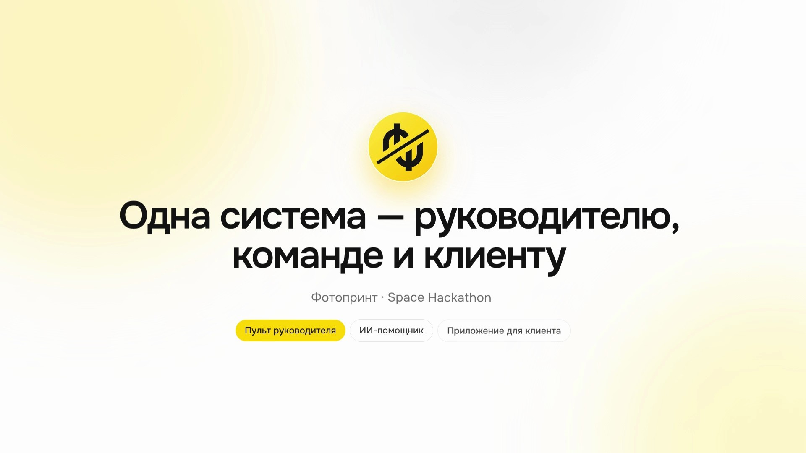
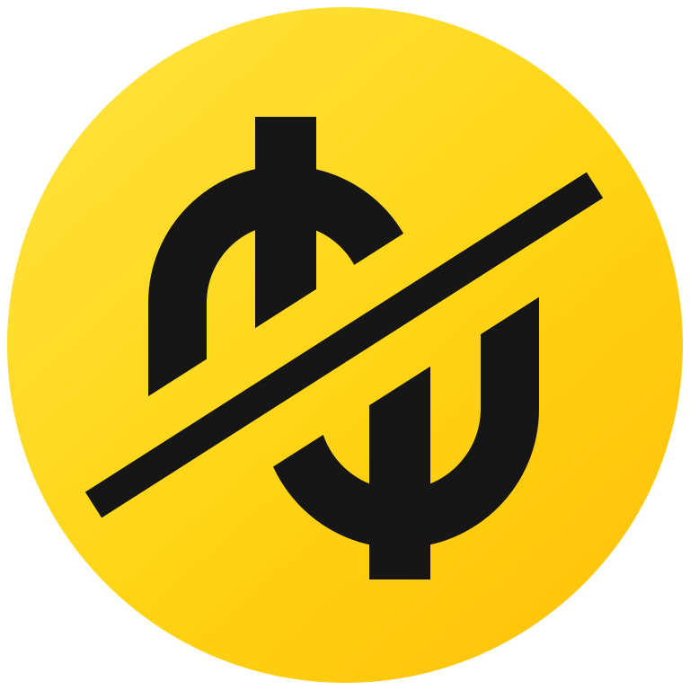
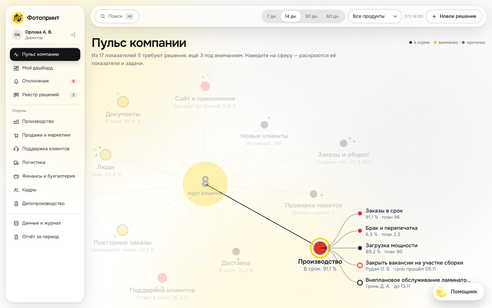
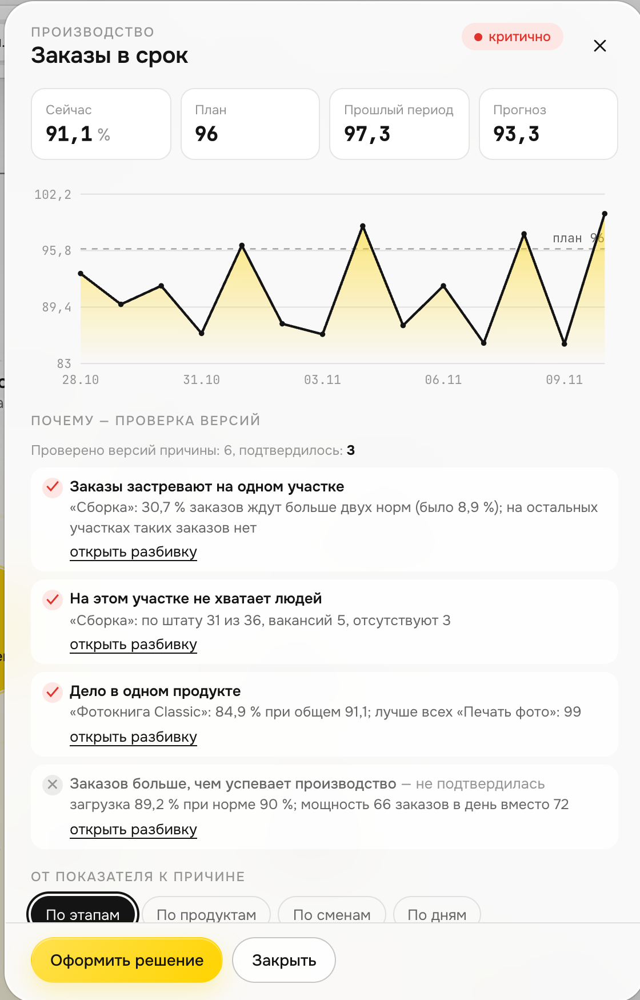
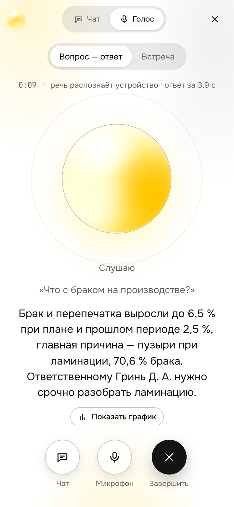
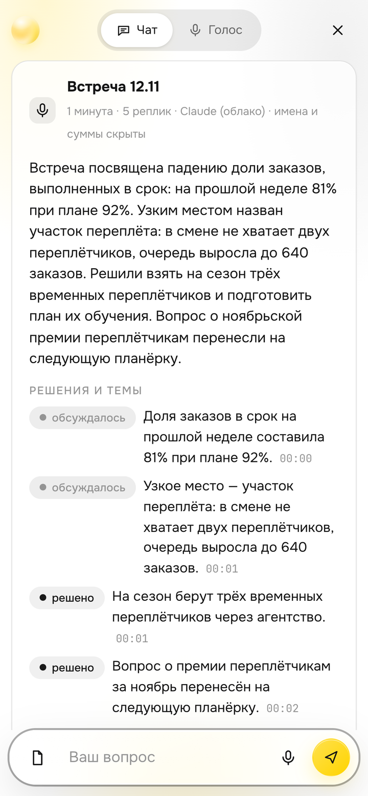
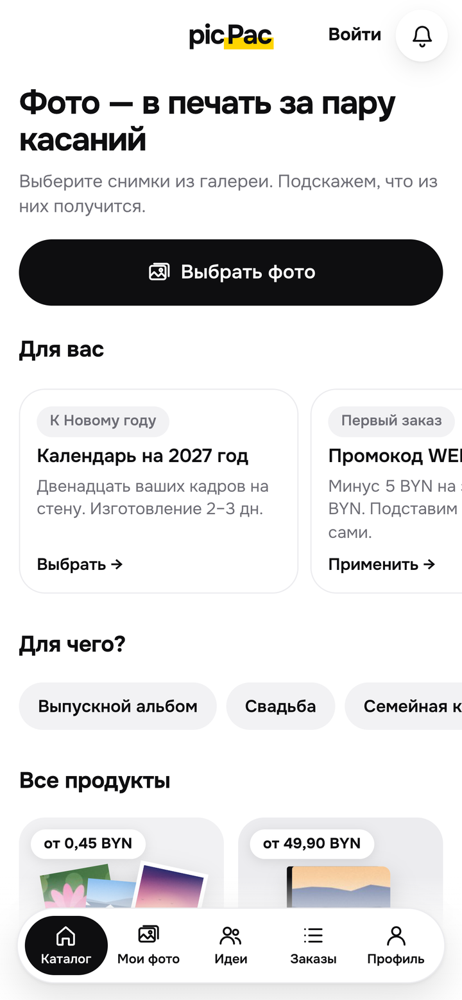
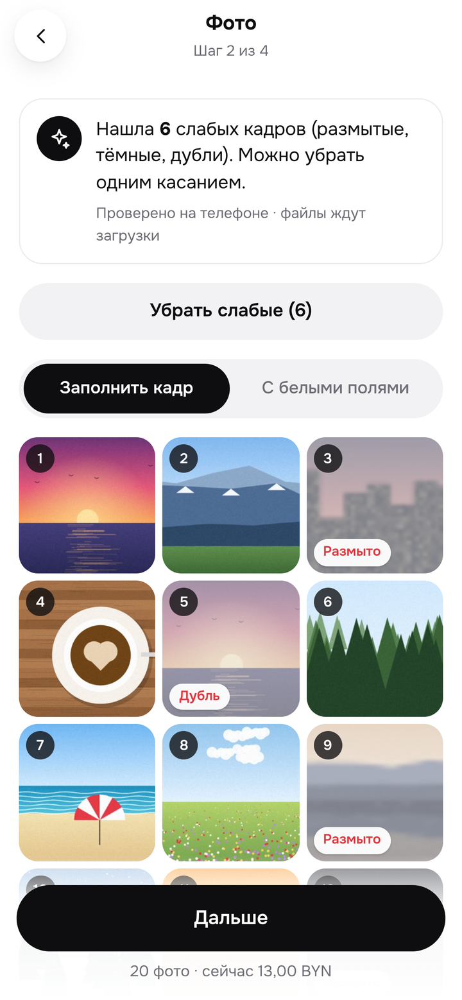
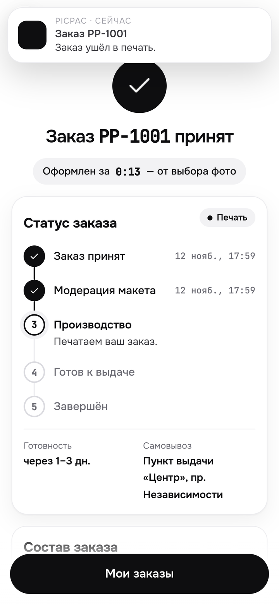

Заказ с телефона и статус без звонка в поддержку
Показатели всех отделов, причина отклонения, решение
Ответы по цифрам и документам, протоколы встреч, задачи

Фотопринт · единая система управления

«Заказы в срок» — 91,1 % при плане 96 %
Система сама проверяет версии по данным: заказы застревают на сборке, там не хватает людей
Карточка: проблема, влияние, причина, действие, владелец, срок, приоритет
Реестр решений, история изменений, запись в журнале
Спрос и мощность производства. Неделя дефицита — с 16 ноября, узкое место — сборка
Свежесть источников, пропуски, дубли и сверка итогов с 1С — для аналитика
Одной кнопкой, за секунды — вместо 3–4 часов в 1С





пульт, помощник, приложение
одна точка входа: скрывает данные, считает лимиты, ведёт журнал
На стенде в интернете локальной модели нет — там на финансовые вопросы отвечают встроенные правила. Локальная модель развёрнута и замерена на ноутбуке.
| ОТ-01…ОТ-08 | 8 из 8 |
| Запуск по README | 1 команда |
| Роли с разными правами | 5 |
Нужен только Python. Есть стенд по ссылке и сброс демо-данных одной кнопкой
| Сценарии | 5 из 5 |
| Экраны | 5 из 5 |
| Приёмка УП-01…05 | 5 из 5 |
17 показателей, 6 источников. Проверено запросами под директором, руководителем и аналитиком
| Путь клиента | 8 из 8 |
| МП-01…МП-06 | 6 из 6 |
| Приёмка | 5 из 5 |
| Дополнительно | 7 из 8 |
15 автотестов сервера, проход в размере телефона
| Сценарии | 4 из 6 |
| AI-01…AI-07 | 7 из 7 |
| Приёмка | 5 из 5 |
93 % поручений, 13 из 13 контрольных вопросов, отказы по чужим документам — в журнале
2 992 заказа при норме 500 · 1 697 клиентов при норме 200 · 640 обращений при норме 300 · 20 документов · 3 расшифровки
Подготовка и назначение встречи (трек 3, сценарии 1–2) · белорусский язык в приложении
Соглашение о неразглашении, владельцы данных
ERP, 1С, Битрикс24 — через тот же слой событий, сами системы не меняем
Настоящий закрытый контур: данные не выходят с площадки
Кадры или производство — затем остальные отделы
Общий сервер, роли и журнал, ИИ-шлюз, единый слой событий, оформление
Путь клиента от фото до заказа, проверка кадров, работа без сети, экран участка
Протоколы встреч, ответы по документам, задачи, голос, контрольные вопросы
fotoprint.
130-49-141-77.sslip.io